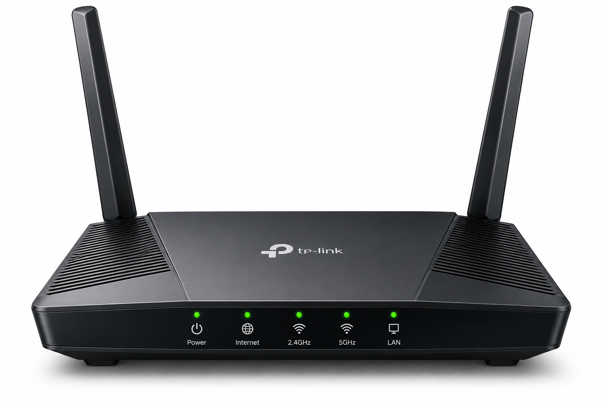
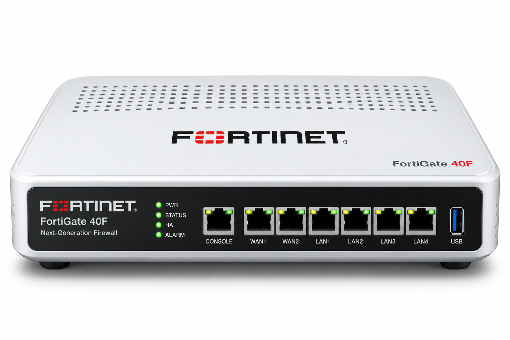
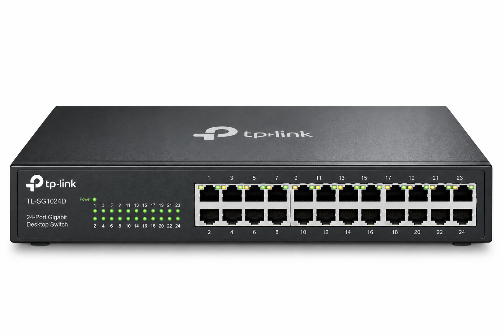
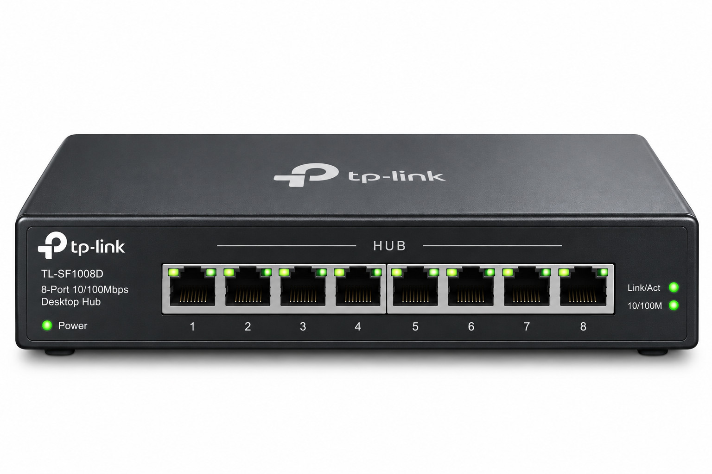
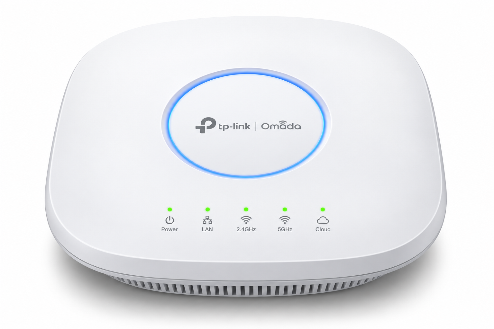
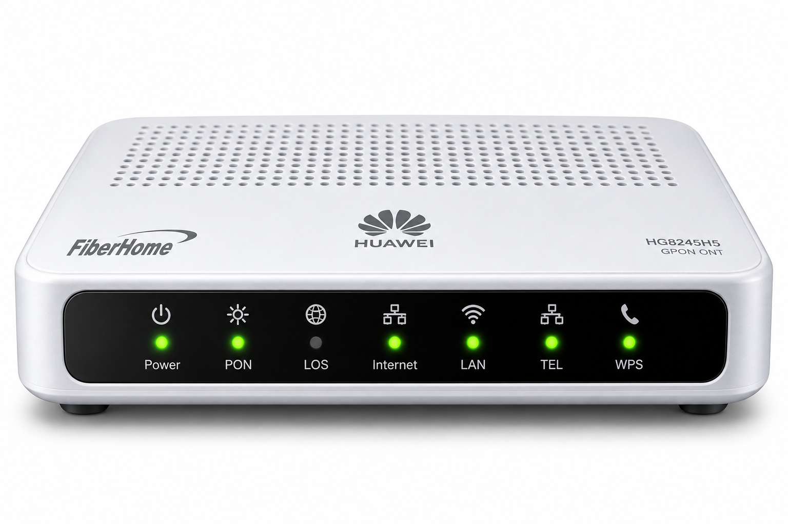

นำเมาส์ไปชี้หรือแตะค้างที่จุดอุปกรณ์รอบๆ ผัง

เชื่อมต่อเครือข่ายต่าง Subnet หรือเชื่อมวง LAN ภายในออกสู่อินเทอร์เน็ต WAN โดยอ่าน Logical IP Address บน Routing Table เพื่อเลือกเส้นทางส่งข้อมูล (Packet) ที่เร็วและมีประสิทธิภาพที่สุด

ปราการด่านแรกป้องกันภัยคุกคาม กรองทราฟฟิกข้อมูลเข้า-ออกตามนโยบายความปลอดภัย (Security Rules) ดักจับมัลแวร์ ป้องกันการโจมตี DDoS และตรวจจับการแฮกเจาะระบบแบบ Real-time

อุปกรณ์รวมสายสัญญาณสำหรับคอมพิวเตอร์ในวง LAN ส่งเฟรมข้อมูลแบบ Unicast ไปยังพอร์ตปลายทางโดยจดจำ Physical MAC Address ลงในตาราง MAC Address Table

อุปกรณ์รวมสัญญาณรุ่นแรก ทำหน้าที่ทวนสัญญาณไฟฟ้าแล้วกระจายออกทุกพอร์ตโดยไม่มีความฉลาด ทุกอุปกรณ์แชร์แบนด์วิดท์ร่วมกัน เกิดปัญหาข้อมูลชนกัน (Collision) บ่อยครั้ง

อุปกรณ์ทำหน้าที่เป็นสะพานเชื่อมระหว่างเครือข่ายมีสาย (LAN) เข้ากับสัญญาณไร้สาย (Wi-Fi) ช่วยให้สมาร์ตโฟน แล็ปท็อป และอุปกรณ์ IoT เชื่อมโยงเข้าสู่ระบบเครือข่ายได้อย่างอิสระ

อุปกรณ์โมเด็มไฟเบอร์ (Optical Network Terminal) ทำหน้าที่แปลงสัญญาณแสง (Light Pulse) ผ่านสายใยแก้วนำแสงจากผู้ให้บริการอินเทอร์เน็ต (ISP) ให้เป็นสัญญาณไฟฟ้าดิจิทัลก่อนส่งเข้า Firewall และ Router